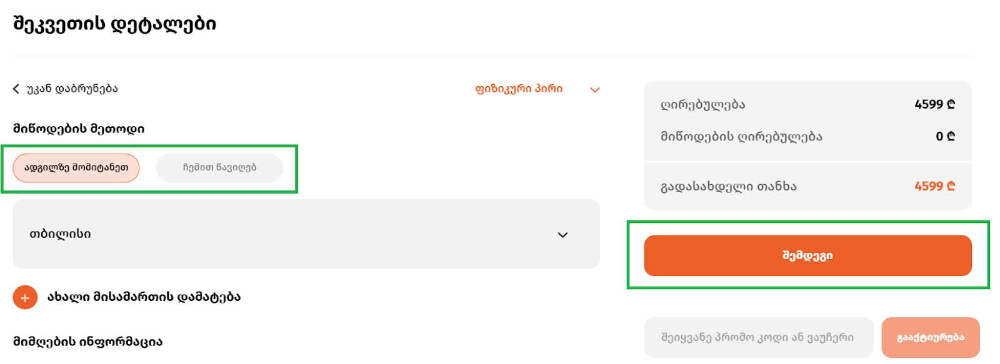

განვადება
როგორ შევიძინოთ ტექნიკა ონლაინ განვადებით ზუმერში?
ზუმერის ქსელში შეგიძლიათ ისარგებლოთ თიბისი ბანკის, საქართველოს ბანკის, კრედო ბანკისა და სფეის QR-ის ონლაინ განვადებით.
ზუმერის ვებგვერდიდან ონლაინ განვადებით სარგებლობისთვის, უპირველესად საჭიროა გაიაროთ რეგისტრაცია ან ავტორიზაცია ზუმერის ვებგვერდზე. ინსტრუქცია იხილეთ აქ:
ნაბიჯი 1: გაიარეთ რეგისტრაცია გუგლის ანგარიშით ან ტელეფონის ნომრით, სრულად შეავსეთ თქვენი პროფილი პირადი ინფორმაციით. თუ უკვე დარეგისტრირებული ხართ, გაიარეთ ავტორიზაცია - მეილით, გუგლის ანგარიშითა ან ტელეფონის ნომრით.
ნაბიჯი 2: Რეგისტრაციის გავლის შემდეგ ზუმერის ვებგვერდზე შეარჩიეთ სასურველი ნივთი და აირჩიეთ ღილაკი “ყიდვა”.

ნაბიჯი 3: სასურველი პარამეტრების არჩევისა და შეკვეთის დეტალების შევსების შემდეგ, დააწექით ღილაკს “შემდეგი”.

ნაბიჯი 4: გადახდის ტიპებში ირჩევთ “განვადებით შეძენა”-ს, შემდეგ კი სასურველ ბანკს.
ნაბიჯი 5: ეცნობით “წესებსა და პირობებს”, რასაც ადასტურებთ მონიშნული პირობაზე დათანხმებით

ნაბიჯი 6: Ბანკის არჩევის შემდეგ ვაჭერთ “შემდეგს” და გადავდივართ უშუალოდ სასურველი ბანკის ვებგვერდზე.
ბანკი 1: თიბისი ბანკი
- გადახდის მეთოდებში ირჩევთ თიბისი ბანკის განვადებას, აჭერთ ღილაკს “გაგრძელება” და გადადიხართ ბანკის გვერდზე: Შეიყვანეთ პირადი ნომერი და მობილურის ნომერი, დაადასტურეთ რომ არ ხართ რობოტი და მიუთითეთ მიღებული კოდი, უსაფრთხოების დაცვისთვის.
- შეავსეთ განაცხადის ფორმა: დასაქმების სფერო, შემოსავალი, თანამონაწილეობა, მისმართი, საკონტაქტო პირი;
- ფინანსური ინფორმაციის შეყვანის შემდეგ გადადიხართ დადასტურების გვერდზე. სადაც დეტალურად წაიკითხავთ ბანკის მიერ მოთხოვნილ წესებს და თანხმობის შემთხვევაში მონიშნავთ ღილაკს „ვეთანხმები მოცემულ პირობებს“
- ატვირთეთ შემოსავლის დამადასტურებელი ცნობა;
ყველა ამ პროცედურის წარმატებით დასრულების შემდეგ დაელოდეთ ჩვენი ოპერატორის ზარს ნივთის მიწოდების/გატანის თაობაზე, მოგაწვდით სასურველ ნივთს, ან თავად შეძლებთ წინასწარ მითითებული ფილიალიდან გატანას.
ბანკი 2: საქართველოს ბანკი
- გადახდის მეთოდებში Საქართველოს ბანკის არჩევის შემდეგ გადადიხართ ბანკის გვერდზე, შეგყავთ მონაცემები ან გადიხართ რეგისტრაციას;
- გაეცანით საქართველოს ბანკის პირობებს და დათანხმდით სურვილის შემთხვევაში;
- შეავსეთ თქვენი ფინანსური მონაცემები მოთხოვნილ გრაფებში;
- შეავსეთ თქვენი ფინანსური მონაცემები მოთხოვნილ გრაფებში;
- სმს-ის სახიით მიიღებთ დადასტურებას განვადების შესახებ;
ყველა ამ პროცედურის წარმატებით დასრულების შემდეგ დაელოდეთ ჩვენი ოპერატორის ზარს ნივთის მიწოდების/გატანის თაობაზე, მოგაწვდით სასურველ ნივთს, ან თავად შეძლებთ წინასწარ მითითებული ფილიალიდან გატანას.
ბანკი 3: კრედო ბანკი
- კრედო ბანკის განვადების არჩევისას გადავდივართ კრედო ბანკის საიტზე, სადაც ბანკს ავტომატურად გამოაქვს მონაცემები, თქვენ სურვილისამებრ ირჩევთ განვადების ვადას;
- ავსებთ პირად მონაცემებს;
- გაიარეთ რეგისტრაცია ბანკის ვებგვერდზე;
- გაეცანით პირობებს და სურვილის შემთხვევაში, დათანხმდით მას;
- გაიარეთ იდენტიფიკაცია;
ყველა ამ პროცედურის წარმატებით დასრულების შემდეგ დაელოდეთ ჩვენი ოპერატორის ზარს ნივთის მიწოდების/გატანის თაობაზე, მოგაწვდით სასურველ ნივთს, ან თავად შეძლებთ წინასწარ მითითებული ფილიალიდან გატანას.
ბანკი 4: SPACE QR განვადება
- იმისთვის რომ, ვისარგებლოთ SPACE-ის განვადებით, აუცილებელია Space Bank-ის აპლიკაცია.
- იმისთვის რომ, ვისარგებლოთ SPACE-ის განვადებით, აუცილებელია Space Bank-ის აპლიკაცია.
- ჩვენს ვებგვერდზე ირჩევთ ნივთს და გადადიხართ SPACE BANK-ის განვადების პორტალში სადაც ჩნდება QR კოდი, რომელსაც ასკანერებთ;
- დასკანერების შემდეგ ჩვენს სმარტფონზე ისახება ჩვენი არჩეული ნივთის ღირებულება, ვამოწმებთ თანხას და ვაგრძელებთ განვადების შევსებას;
- ყველა საჭირო ველის შევსებისთანავე თქვენს სმარტფონზე ისახება განვადების სტატუსი დამტკიცებულია თუ არა;
ყველა ამ პროცედურის წარმატებით დასრულების შემდეგ დაელოდეთ ჩვენი ოპერატორის ზარს ნივთის მიწოდების/გატანის თაობაზე, მოგაწვდით სასურველ ნივთს, ან თავად შეძლებთ წინასწარ მითითებული ფილიალიდან გატანას.